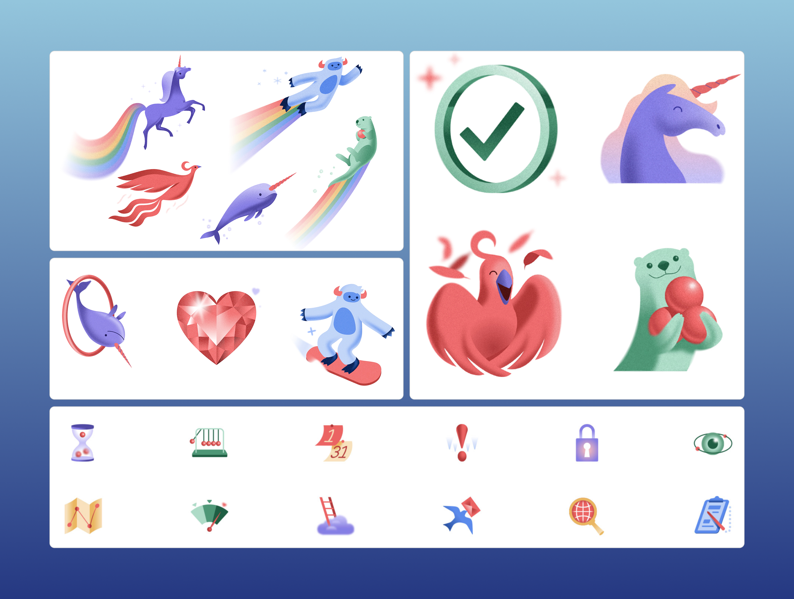
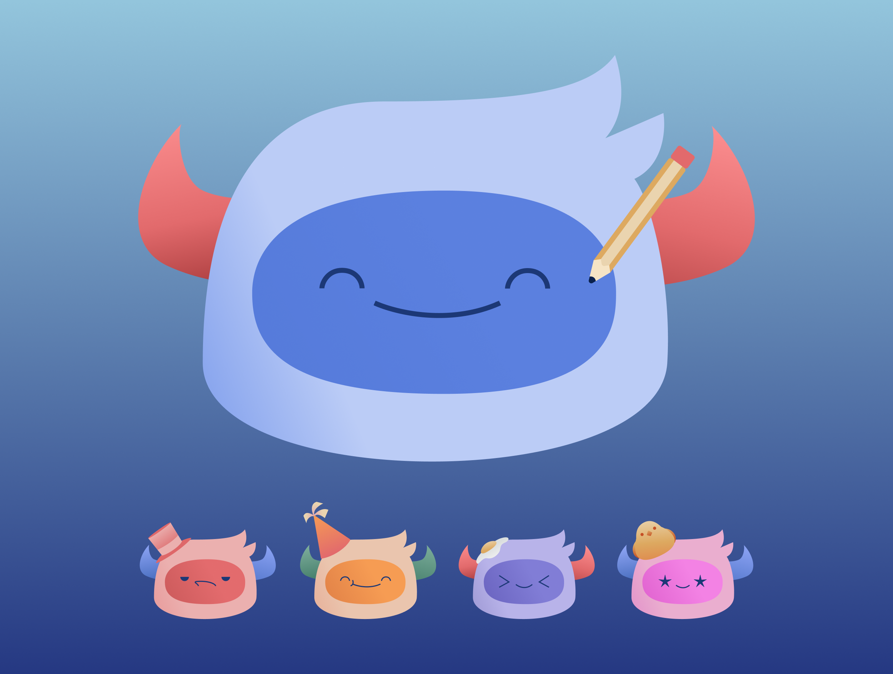
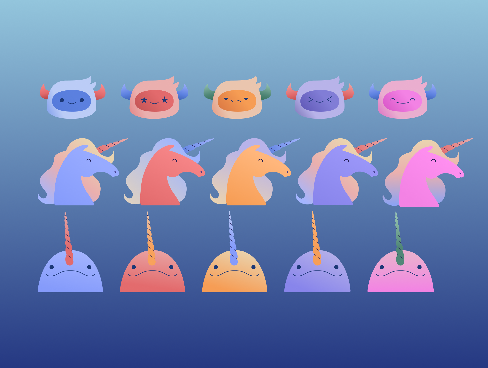
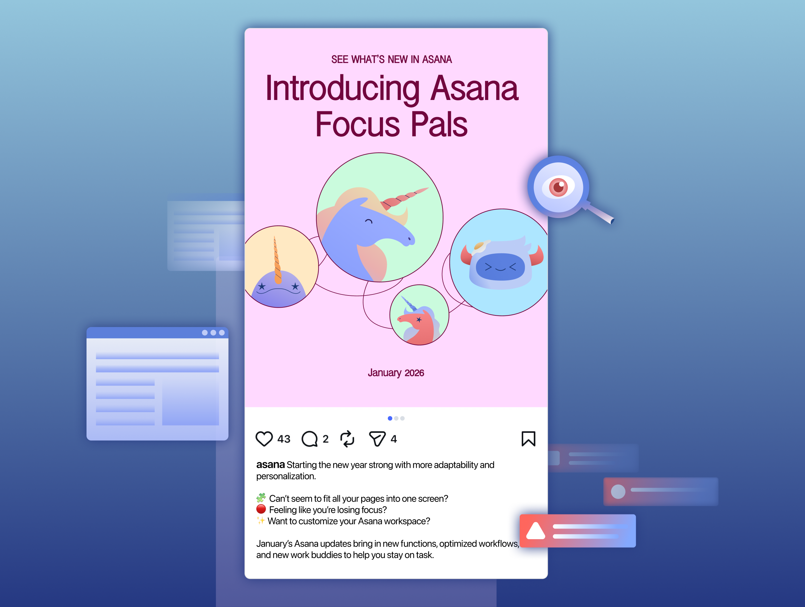

Asana is a plateform to help teams and people manage projects and tasks. In charge of illustrations, I helped develop an avatar customization feature of our academic case study where users are able to customize their own Asana Pal.
I first gathered Asana's exisiting illustrations to dissect common themes and qualities that gives their graphics their look. I found their illustrations uses heavy gradients, soft palettes, and rounded corners to give a friendly yet engaging tone.

Applying the qualities I gathered, I extended Asana's mascot illustrations for our feature by introducing additinoal colour combinations and accessories. Despite Asana's detailed characters, their facial expressions were suprisingly simple, which I reflected on providing a variety of facial expressions as well.

The final illustrations redefine Asana's pre-existing mascots for our feature and represented in a new visual light to create a more engaging experience for users.

Once the illustration were complete, I create mock social media posts to showcase the final product.

When designing for the user, it's important to understand their needs. Understanding your target user and audience shapes both the visuals and language of a project when conveyed to an audience.